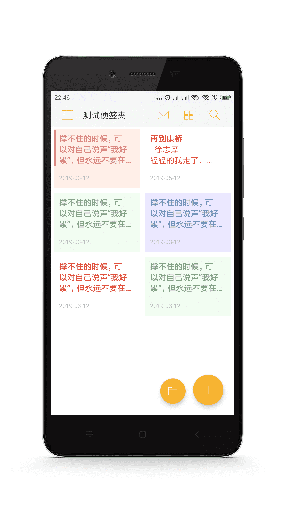

1. 前言
2. 首页功能
2.1 首页图解
2.2 显示模式
2.3 首页排序
2.4 单个置顶
2.5 单个加入回收站
2.6 设置提醒
2.7 批量置顶
2.8 批量加入回收站
2.9 批量导出txt
2.10 移动到便签夹
3. 新建便签
3.1 新建便签
3.2 如何录音
3.3 如何插入图片
3.4 如何涂鸦
3.5 快捷输入短语
4.便签夹
4.1 便签夹界面
4.2 新建便签夹
4.3 重命名便签夹
4.4 加密便签夹
4.5 便签夹排序
4.6 删除便签夹
5. 回收站
5.1 回收站
5.2 单个永久删除
5.3 单个还原到便签夹
5.4 批量永久删除
5.5 批量还原到便签夹
6. 桌面便签
6.1 桌面便签
6.2 如何添加
6.3 修改大小
6.4 修改样式
6.5 重新关联
6.6 如何移除
7. 设置
7.1 首页排序方式
7.2 首页背景图片
7.3 编辑界面背景图片
7.4 夜间模式
8. 备份
8.1 本地备份
8.2 WebDAV云备份
8.3 数据还原
8.4 换手机迁移数据
9. 其他
9.1 为什么有广告
9.2 如何移除广告
Published with GitBook
2.2 显示模式
显示模式
点击右上角的
图标，可以切换首页的
显示模式
，主要有如下几种：
单行模式
网格模式
瀑布流模式
图文模式
下面，分别介绍一下几种模式的区别。
1. 单行模式 (显示第一行内容)
2. 网格模式 (显示前3行内容)

3. 瀑布流模式 (显示前5行内容)
4. 图文模式 (显示前3行内容+第一张图片)
results matching "
"
No results matching "
"
 图标，可以切换首页的显示模式，主要有如下几种：
图标，可以切换首页的显示模式，主要有如下几种：